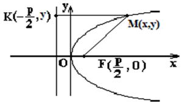

6.4 Парабола
Парабола – геометрическое место точек  , равноудалённых от заданной точки (фокус) и от данной прямой (директрисы).
, равноудалённых от заданной точки (фокус) и от данной прямой (директрисы).
, равноудалённых от заданной точки (фокус) и от данной прямой (директрисы).. ,

Элементы параболы
- точка
 – вершина;
– вершина;  –
ось параболы;
–
ось параболы;- точка – фокус;
- Уравнение директрисы параболы – уравнение директрисы;
- – эксцентриситет;
 – фокальный параметр
(расстояние от фокуса до директрисы или половины хорды, проходящей через
фокус перпендикулярно оси ).
– фокальный параметр
(расстояние от фокуса до директрисы или половины хорды, проходящей через
фокус перпендикулярно оси ).
Каноническое уравнение параболы
Каноническое
уравнение параболы
Каноническое уравнение параболы с вершиной в точке 
Каноническое
уравнение параболы со смещенной вершиной
Уравнение параболы в полярных координатах
 Уравнение параболы
в полярных координатах
–
уравнение параболы в полярных координатах, связанных с фокусом;
Уравнение параболы
в полярных координатах
–
уравнение параболы в полярных координатах, связанных с фокусом;Параметрические уравнения параболы
Параметрическое уравнение
параболы
–
параметрические уравнения параболы.